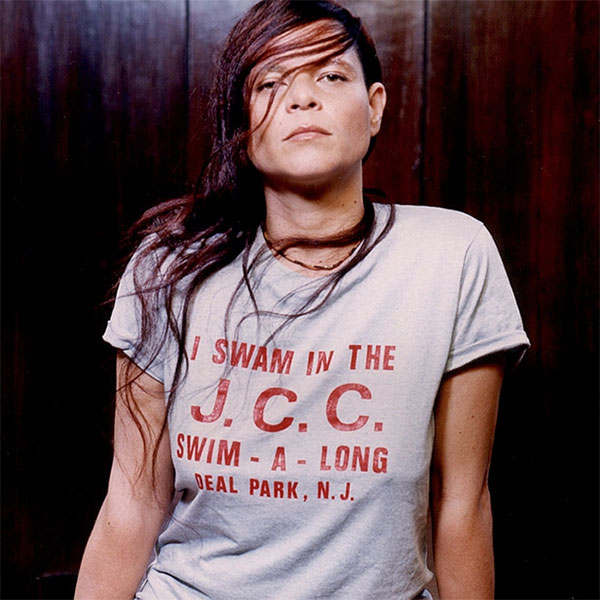
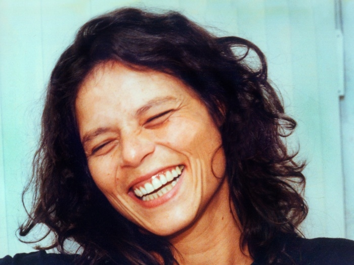

Cássia Rejane Eller nasceu em 10 de dezembro de 1962 no Hospital do Exército de Campo Grande no Rio de Janeiro.[6] Filha de Nanci Ribeiro, uma dona de casa, e Altair Eller, um sargento paraquedista do Exército.[6] O nome foi sugerido pela avó, devota de Santa Rita de Cássia.[1] Aos 4 anos Cássia teve febre reumática e tomou Benzetacil durante 22 anos.[7] Aos 6 anos mudou-se com a família para Belo Horizonte. Aos 10, foi para Santarém, no Pará.[carece de fontes] Aos 12 anos, voltou para o Rio. O interesse pela música começou aos 14 anos, quando ganhou um violão de presente. Aprendeu a tocar violão e falar inglês com as músicas dos Beatles.[8] Aos 18 anos chegou a Brasília, para onde sua família se mudou. Ali, cantou em coral, fez testes para musicais, trabalhou em duas óperas como corista, além de se apresentar como cantora de um grupo de forró.[carece de fontes] Também fez parte, durante um ano, do primeiro trio elétrico de Brasília, denominado Massa Real, e tocou surdo em um grupo de samba. Trabalhou em vários bares (como o Bom Demais), cantando e tocando.[carece de fontes] Despontou no mundo artístico em 1981, ao participar de um espetáculo de Oswaldo Montenegro.[9] Um ano mais tarde, aos 19 anos, querendo sua liberdade pessoal, foi para Belo Horizonte atrás de um lugar para morar e um emprego, onde conseguiu assim que chegou, e passou a trabalhar como servente de pedreiro. "Fiz massa e assentei tijolos", contava.[10] Lá, alugou um pequeno quarto, onde ficou vivendo. Na escola, não chegou a terminar o ensino médio, por causa dos shows que fazia, cada dia num turno diferente, não tinha horário para se dedicar ao estudos.
| ANO | DISCO |
|---|---|
| 1990 | Cássia Eller |
| 1992 | O marginal |
| 1994 | Cássia Eller |
| 1997 | Veneno Antimonotonia |
| 1999 | Com você meu mundo ficaria completo |
| 2002 | Dez de dezembro |
| 1996 | Cássia Eller ao vivo |
| 1998 | Veneno vivo |
| 2001 | Acustico MTV: Cássia Eller |
| 2006 | Rock in Rio: Cássia Eller |
| 2012 | Do lado do avesso |
| 2019 | Todo Veneno Vivo |